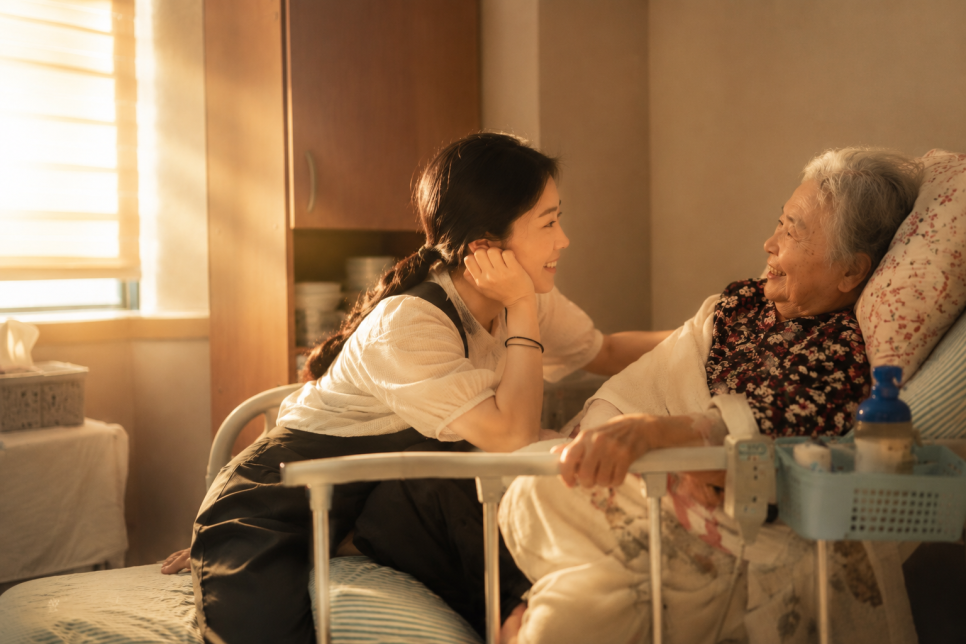
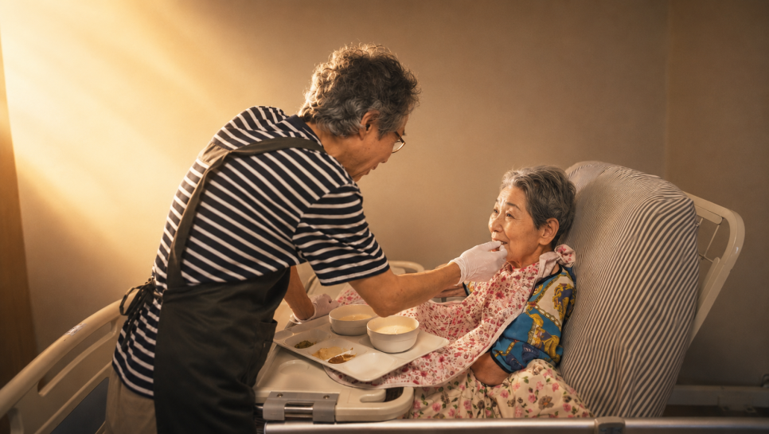

GREETING · 인사말
처음 이 일을 시작하던 날, 요양원에 들어서며 바쁘게 움직이시던 요양보호사 선생님들의 모습이 아직도 눈에 선합니다. 쉴 틈 없이 어르신들을 돌보시는 그 헌신적인 모습을 보면서, 사명감 없이는 결코 해낼 수 없는 일이라는 생각이 들었습니다.
그러던 어느 날 아침이었습니다. 청소기를 돌리고 물걸레질을 하며 분주히 움직이시던 선생님을, 어느 어르신이 몇 번이고 힘겹게 부르셨습니다. 정신없이 손을 놀리시던 선생님의 얼굴에는 여유가 없었습니다. 그 모습을 보면서 문득 이런 생각이 들었습니다. ‘기계가 대신할 수 있는 일은 기계에게 맡기고, 그렇게 아낀 시간을 선생님들이 어르신과 얼굴을 마주하는 데 쓸 수 있다면 얼마나 좋을까.’
그 생각을 곧바로 실행에 옮겼습니다. 층마다 로봇청소기를 두어 바닥 청소는 로봇에게 맡기고, 선생님들은 그 시간에 어르신 한 분 한 분께 활기차게 아침 인사를 건네며 하루를 시작하고 있습니다. 매일 아침 9시가 되면 모든 선생님들이 다 함께 어르신들께 인사를 건넵니다. 시간의 흐름을 느끼시게 하고, 하루를 시작하는 활력을 드리고 싶은 마음에서입니다.
아래 사진은 복도를 지나가던 선생님이 어르신의 부름을 받고 들어가 다정하게 말벗을 해드리던 모습입니다. 그 정겨운 풍경이 참 보기 좋아 직접 담아보았습니다.

어르신과 다정하게 말벗을 나누는 요양보호사 선생님
(프라이버시 보호를 위해 AI 보정 처리)
요양보호사의 일은 업무 강도가 높다 보니 좋은 선생님을 찾기가 참 힘들어지고, 그러면 돌봄의 질도 떨어질 수밖에 없습니다. 특히 힘들어하시는 일 중 하나가 어르신 목욕 수발입니다. 그래서 다소 비용이 들더라도 목욕을 전담하시는 선생님을 별도로 두었습니다. 나머지 선생님들은 그만큼 어르신들의 일상 돌봄에 더 마음을 쏟을 수 있게 되었습니다.
아래 사진은 식사 수발을 하고 계신 선생님의 모습입니다. 업무 부담을 나누어 짊어짐으로써, 돌봄 하나하나에 더 정성을 담을 수 있도록 하고 있습니다.

식사를 도와드리는 요양보호사 선생님의 모습
(어르신 얼굴 일부 AI 보정 처리)
기계가 잘하는 일은 기계에게, 사람만이 할 수 있는 일은 사람에게.
저희 위드온빌리지가 지켜가고자 하는 원칙입니다. 그 여유가 결국 어르신 한 분 한 분을 더 자주 바라보고, 더 오래 손을 잡아드리는 시간으로 이어진다고 믿습니다. 앞으로도 어르신들과 눈을 맞추는 시간을 늘려가는 방향으로, 한 걸음씩 나아가겠습니다.
위드온빌리지 대표 윤건